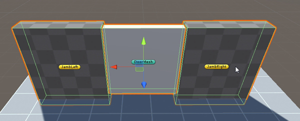
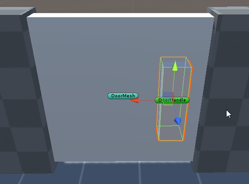
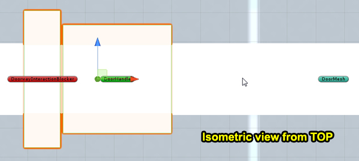
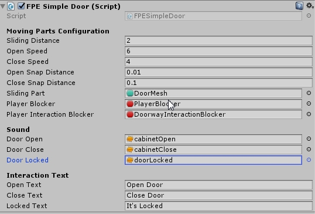
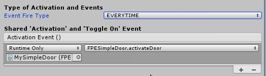
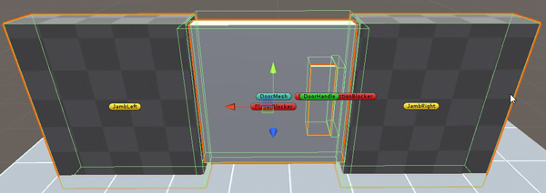

First Person Exploration Kit: Creating a Simple Door
Simple Doors
Note: FPESimpleDoor has been deprecated and should no longer be used. Instead, use the FPESlidingDoor class or create a custom door class by extending FPEDoor. See Creating a Door.
The Simple Door object type provides a way to create simple sliding doors. The Simple Door class can be extended into other types of doors, such as
double doors, swinging doors, garage doors, etc. There are two prefabs included with the asset that use the FPESimpleDoor script. They are
demoSimpleDoorUnlocked and demoSimpleDoorLocked, and are located in the DemoPrefabs folder.
To create a new Simple Door:
- Add an Empty Game Object to your scene, name it MySimpleDoor.
- Add the FPESimpleDoor component.
- Create a child cube (or other mesh) to MySimpleDoor, and name it DoorMesh. Give it scale of (2.5,2.5,0.25).
- Size DoorMesh so it is about the size of your desired door opening.
- Add another child cube (or other mesh) to MySimpleDoor, and name it JambLeft. Give it a scale of (2.5,3.0,0.5).
- Position and scale JambLeft to the left side of DoorMesh.
- Duplicate JambLeft, and rename if JambRight. Move it to the other side of DoorMesh.

- Add a child cube (or other mesh) to DoorMesh, and name it MyDoorHandle. Give it a scale of (0.15,0.5,1.5). This will act as the "Interactable" part of door (namely, the handle).

- Add a child cube to DoorMesh, and name it DoorwayInteractionBlocker. Give it a scale of (0.05,0.5,1.9). Delete the Mesh Renderer and Mesh Filter.
- Position DoorwayInteractionBlocker so that it blocks a line of sight from the doorway. This will prevent the player from closing the door on themselves.

- Add another child cube to MySimpleDoor, and name it PlayerBlocker. Scale it so it blocks the doorway with a bit of overlap. Delete the Mesh Renderer and Mesh Filter.
- Assign PlayerBlocker to the FPEIgnore Layer. This will block the player from entering the doorway when it is closed.
- Click on MySimpleDoor, and assign DoorMesh to the "Sliding Part" field, PlayerBlocker to the "Player Blocker" field, and DoorwayInteractionBlocker to the "Player Interaction Blocker" field.
- Assign door sounds in the Sound section of the Inspector.

- Select the DoorHandle child object, and add the FPEInteractableActivateScript component.
- In the "Type of Activation and Events" section of the Inspector, change the Event Fire Type to be EVERYTIME.
- In the "Shared 'Activation' and 'Toggle On' Event", press the '+' to add an event. Drag and drop MySimpleDoor, and select the MySimpleDoor.activateDoor() function, as shown below:

- Change the Interaction String field in the inspector to read "Open Door".
- Run the scene. Look at the door handle and press the interact button. The door will open. Interact with it again, and the door will close.
- You're finished!
Objects that use FPESimpleDoor are automatically saved and loaded by the Save Game System. To see an example of how you can require that the player have a key to unlock the door, please refer to the demoSimpleDoorLocked prefab.
A completely configured Door (per the steps above) is shown here:
